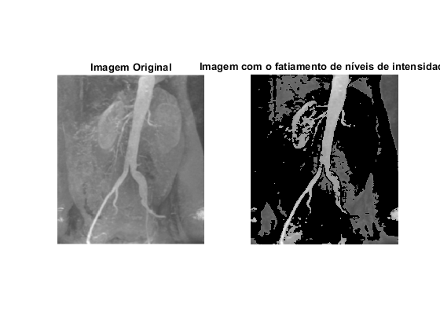
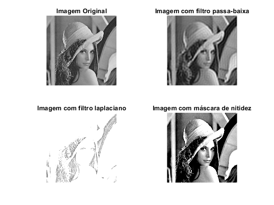
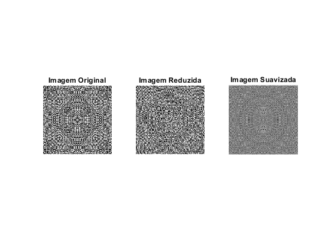
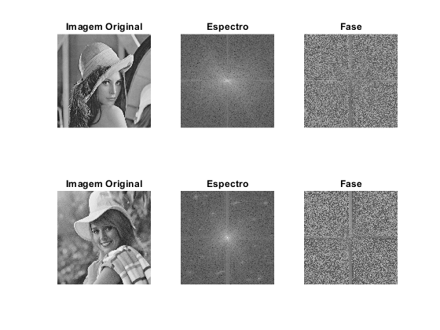
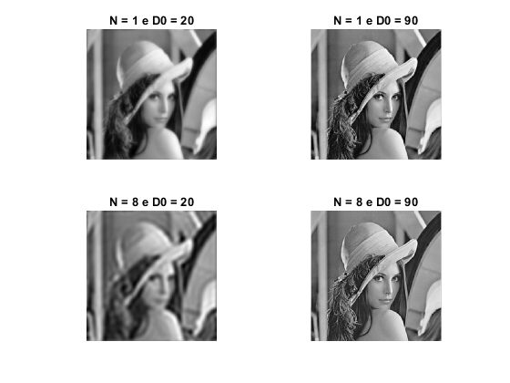
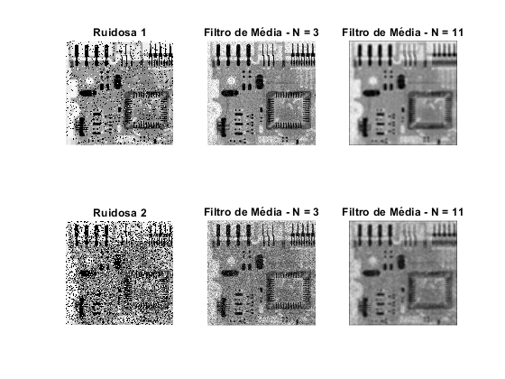
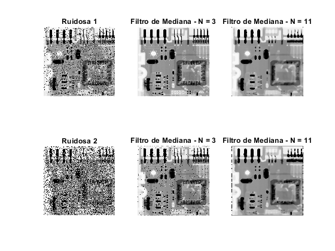

Processamento Digital de Imagens 2021/1
Aluno: Bruno Baptista Guerra
Contents
Questão 1
clc; close all; clear all; img_questao1 = imread('Fig10.15(a).jpg'); img_size1 = size(img_questao1); image = img_questao1(:,:,1); A = 110; B = 150; img_size1 = size(img_questao1); img_final1 = zeros(img_size1(1),img_size1(2)); for I = 1:img_size1(1) for J = 1:img_size1(2) if (A < image(I,J)&& image(I,J) < B) img_final1(I,J) = 0; else img_final1(I,J) = image(I,J); end end end figure(1) subplot(1,2,1); imshow(uint8(img_questao1)); title('Imagem Original'); subplot(1,2,2); imshow(uint8(img_final1)); title('Imagem com o fatiamento de níveis de intensidade')
Questão 2
input_image = imread('lena.tif'); [M, N] = size(input_image); FT_img = fft2(double(input_image)); % a) D0 = 30; u = 0:(M-1); idx = find(u>M/2); u(idx) = u(idx)-M; v = 0:(N-1); idy = find(v>N/2); v(idy) = v(idy)-N; [V, U] = meshgrid(v, u); D = sqrt(U.^2+V.^2); H = double(D <= D0); G = H.*FT_img; output_image_lowpass = real(ifft2(double(G))); % b) filter_mask = [0 -1 0;-1 4 -1; 0 -1 0];
for I = 2:M-1 for J = 2:N-1 sum = 0; row = 0; col = 1; for k = I-1:I+1 row = row + 1; col = 1; for l = J-1:J+1 sum = sum + input_image(k,l)*filter_mask(row,col); col = col + 1; end end output_image_laplacian(I,J) = sum; end end % c) resp = imfilter(input_image, filter_mask, 'conv'); minR = min(resp(:)); maxR = max(resp(:)); resp = (resp - minR) / (maxR - minR); sharpened = input_image + resp; minA = min(sharpened(:)); maxA = max(sharpened(:)); sharpened = (sharpened - minA) / (maxA - minA); output_image_sharpened = imadjust(input_image, [0.3 0.7], []); figure(2) subplot(2, 2, 1), imshow(input_image); title('Imagem Original'); subplot(2, 2, 2), imshow(output_image_lowpass, [ ]); title('Imagem com filtro passa-baixa') subplot(2, 2, 3), imshow(output_image_laplacian, [ ]); title('Imagem com filtro laplaciano') subplot(2, 2, 4), imshow(output_image_sharpened, [ ]); title('Imagem com máscara de nitidez')
Questão 3
input_image = imread('frexp_1.png'); [M, N] = size(input_image); output_image_downsample = input_image(1:2:M, 1:2:N); for I = 1:M for J = 1:N rmin = max(1,I-1); rmax = min(M,I+1); cmin = max(1,J-1); cmax = min(N,J+1); temp = input_image(rmin:rmax, cmin:cmax); output_image_smoothed(I,J) = mean(temp(:)); end end figure(3) subplot(1,3,1); imshow(input_image); title('Imagem Original'); subplot(1,3,2); imshow(uint8(output_image_downsample)); title('Imagem Reduzida') subplot(1,3,3); imshow(uint8(output_image_smoothed)); title('Imagem Suavizada')
Questão 4
input_image1 = imread('lena.tif'); input_image2 = imread('elaine.tif'); F1 = fft2(input_image1); F1 = log(1 + fftshift(F1)); magnitude1 = abs(F1); phase1 = angle(F1); F2 = fft2(input_image2); F2 = log(1 + fftshift(F2)); magnitude2 = abs(F2); phase2 = angle(F2); figure(4) subplot(2,3,1); imshow(input_image1); title('Imagem Original'); subplot(2,3,2); imshow(magnitude1,[]); title('Espectro'); subplot(2,3,3); imshow(phase1,[]); title('Fase'); subplot(2,3,4); imshow(input_image2); title('Imagem Original'); subplot(2,3,5); imshow(magnitude2,[]); title('Espectro'); subplot(2,3,6); imshow(phase2,[]); title('Fase'); % combined = abs(F2) .* exp(J*angle(F1)); img_combined1 = real(ifft2(double(combined))); % figure(5) % imshow(uint8(img_combined1));
Questão 5
input_image = imread('lena.tif');
[M, N] = size(input_image);
FT_img = fft2(double(input_image));
n = 1;
D0 = 20;
u = 0:(M-1);
v = 0:(N-1);
idx = find(u > M/2);
u(idx) = u(idx) - M;
idy = find(v > N/2);
v(idy) = v(idy) - N;
[V, U] = meshgrid(v, u);
D = sqrt(U.^2 + V.^2);
H = 1./(1 + (D./D0).^(2*n));
G = H.*FT_img;
output_image1 = real(ifft2(double(G)));
n = 1; D0 = 90; u = 0:(M-1); v = 0:(N-1); idx = find(u > M/2); u(idx) = u(idx) - M; idy = find(v > N/2); v(idy) = v(idy) - N; [V, U] = meshgrid(v, u); D = sqrt(U.^2 + V.^2); H = 1./(1 + (D./D0).^(2*n)); G = H.*FT_img; output_image2 = real(ifft2(double(G)));
n = 8; D0 = 20; u = 0:(M-1); v = 0:(N-1); idx = find(u > M/2); u(idx) = u(idx) - M; idy = find(v > N/2); v(idy) = v(idy) - N; [V, U] = meshgrid(v, u); D = sqrt(U.^2 + V.^2); H = 1./(1 + (D./D0).^(2*n)); G = H.*FT_img; output_image3 = real(ifft2(double(G)));
n = 8; D0 = 90; u = 0:(M-1); v = 0:(N-1); idx = find(u > M/2); u(idx) = u(idx) - M; idy = find(v > N/2); v(idy) = v(idy) - N; [V, U] = meshgrid(v, u); D = sqrt(U.^2 + V.^2); H = 1./(1 + (D./D0).^(2*n)); G = H.*FT_img; output_image4 = real(ifft2(double(G))); % Displaying Input Image and Output Image figure(6) subplot(2,2,1), imshow(output_image1, [ ]); title('N = 1 e D0 = 20'); subplot(2,2,2), imshow(output_image2, [ ]); title('N = 1 e D0 = 90'); subplot(2,2,3), imshow(output_image3, [ ]); title('N = 8 e D0 = 20'); subplot(2,2,4), imshow(output_image4, [ ]); title('N = 8 e D0 = 90');
Questão 6
input_image1 = imread('ruidosa1.tif'); input_image2 = imread('ruidosa2.tif'); H1 = fspecial('average', [3 3]); output_image1_mean3x3 = imfilter(input_image1,H1); H3 = fspecial('average', [11 11]); output_image1_mean11x11 = imfilter(input_image1,H3); H1 = fspecial('average', [3 3]); output_image2_mean3x3 = imfilter(input_image2,H1); H3 = fspecial('average', [11 11]); output_image2_mean11x11 = imfilter(input_image2,H3); figure(7) subplot(2,3,1); imshow(input_image1); title('Ruidosa 1'); subplot(2,3,2); imshow(output_image1_mean3x3); title('Filtro de Média - N = 3'); subplot(2,3,3); imshow(output_image1_mean11x11); title('Filtro de Média - N = 11'); subplot(2,3,4); imshow(input_image2); title('Ruidosa 2'); subplot(2,3,5); imshow(output_image2_mean3x3);title('Filtro de Média - N = 3'); subplot(2,3,6); imshow(output_image2_mean11x11); title('Filtro de Média - N = 11'); % [peaksnr, snr] = psnr(input_image2, output_image2_mean11x11); % fprintf('\n The Peak-SNR value is %0.4f', peaksnr); % fprintf('\n The SNR value is %0.4f \n', snr); % output_image1_median3x3 = medfilt2(input_image1); output_image1_median11x11 = medfilt2(input_image1, [11 11]); output_image2_median3x3 = medfilt2(input_image2); output_image2_median11x11 = medfilt2(input_image2, [11 11]); figure(8) subplot(2,3,1); imshow(input_image1); title('Ruidosa 1'); subplot(2,3,2); imshow(output_image1_median3x3); title('Filtro de Mediana - N = 3'); subplot(2,3,3); imshow(output_image1_median11x11); title('Filtro de Mediana - N = 11'); subplot(2,3,4); imshow(input_image2); title('Ruidosa 2'); subplot(2,3,5); imshow(output_image2_median3x3);title('Filtro de Mediana - N = 3'); subplot(2,3,6); imshow(output_image2_median11x11); title('Filtro de Mediana - N = 11'); 